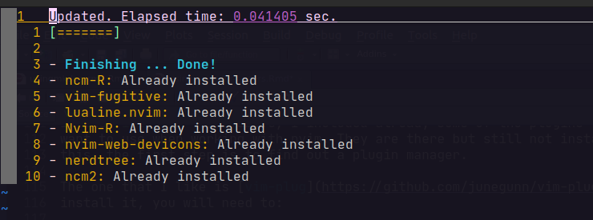

![]()
sudo apt install neovim -yHow to install and config nvim in Ubuntu?
There is a ton of tutorials in the internet about this, but after trying several times, the steps that worked for me are the following:
Then you can validate the version with:
nvim --versionNow that we have nvim installed in our computer, it’s time to configure it. First you need to create the config file that would be in the path ~/.config/nvim/
# Create directory
mkdir ~/.config/nvim/
cd ~/.config/nvim/
# Create nvim config file
nvim init.vimFrom there, you will see an empty file. We are going to add some configuration. There are many options to adapt nvim to your needs and lots of examples out there. Here I’m going to use a basic configuration so you can get an idea on what you can do.
To understand the file, take notes on this:
- Every
"means that the line is a comment - All other lines without the
"are instructions to set your configuration Plugmeans that you want to use a Plugin. You will need a plugin to manage these. (More on this later)
This is what a basic config file would look like:
" Cursor as a block
set guicursor=
" Use relative numbers in files
set relativenumber
" Line where I'm positioned is the real line number
set nu
" No saving or keeping buffer in the background
set hidden
" Indentetation configuration
set tabstop=4 softtabstop=4
set shiftwidth=4
set expandtab
set smartindent
" Start scrolling until 8 spaces away
set scrolloff=8
" Create extra column
set signcolumn=yes
" Mark 80 characters line
set colorcolumn=80
" Set encoding
set encoding=utf-8
" Plugins
call plug#begin()
Plug 'jalvesaq/Nvim-R'
Plug 'preservim/nerdtree'
Plug 'tpope/vim-fugitive'
Plug 'ncm2/ncm2'
Plug 'gaalcaras/ncm-R'
call plug#end()A good idea for me is that, when I add a new line of configuration, I will add a comment stating what that command is mean for. That way, it will be easy for me to remember what I was trying to achieve when I made the change.
Instaling Plug-ins
In the init.vim file above, I included already some of the plugins that I want to use when working with nvim. When using the plugins, these should be in the middle of this call:
call plug#begin('~/.vim/plugged')
call plug#end()Now, you can see that they are included in the init.vim file, but still are not installed. For this, the first step is to find out a plugin manager.
The one that I like is vim-plug. To install it, you will need to:
sh -c 'curl -fLo "${XDG_DATA_HOME:-$HOME/.local/share}"/nvim/site/autoload/plug.vim --create-dirs \
https://raw.githubusercontent.com/junegunn/vim-plug/master/plug.vim'After the vim-plug is installed, you will need to go back to your init.vim document. Then install the rest of plugins with:
:PlugInstallWhen installing the rest of the plugins, you will see something similar to:

If I want to know which pluggins are installed, with the following vim-plug command we can check them:
:PlugStatusnvim workflow for R projects
At this point, we have a functional and adapted nvim for our daily work. Let’s start on what would the workflow look like when dealing with R projects. At first if you already have an R project, you can move on your terminal to that path and open a file with:
nvim my_file.RThis can be done for any R file (Rmd, R, qmd). The configuration will detect the file format and be aware of what it is. Once we have started our nvim session, we need to know a couple of commands to run R from a nvim session:
\rf Connect to R Console
\rq Quit R Console
\d Run current line and move to the next line
\l Run current line, but cursor will stay on the same line.
\pp Run paragraph. But cursor will stay on the same block.
\pd Runs block and move to the next one
\ss Execute a block of selected code. This has to be done with visual mode
\aa Run entire script
\ro Open the “Global Environment”
ctrl + w + l Jump to left panel
ctrl + w + h Jump to right panel
If I made a change on the ~/.vimrc file, I can source it with :source ~/.vimcr
If I have installed the pluggin NERDTree, I need to remap some keys. At the moment I have in my ~/.vimrc file the line: nnoremap <C-n> :NERDTree<CR>, so I don’t have to do :NERDTree to open the file browser. Now this can be done with:
ctrl + n Open file browser on left side by default.
Inside the file tree browser, I can move with the arrows. To expand one folder and show contents, I can hit ENTER. Doing the same in an open folder, will close it.
To move out from the NERDTree browser I can ctrl + w + w so I will be jumping panels from left to right.
Reuse
Citation
BibTeX citation:
@online{a.hernandezmora2022,
author = {Ronny A. Hernandez Mora},
title = {Using {Neovim} for {R} {Users}},
date = {2022-09-13},
url = {https://ronnyale.com//posts/2022-09-11-using-nvim-for-r-users},
langid = {en}
}
For attribution, please cite this work as:
Ronny A. Hernandez Mora. 2022. “Using Neovim for R Users.”
September 13, 2022. https://ronnyale.com//posts/2022-09-11-using-nvim-for-r-users.